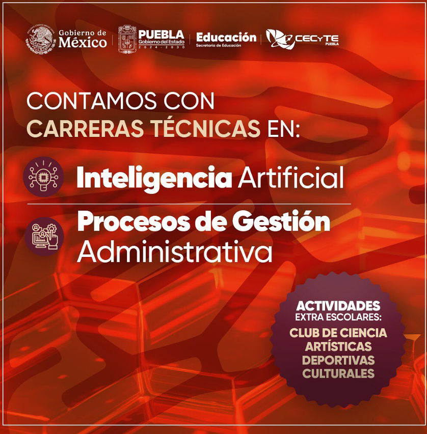
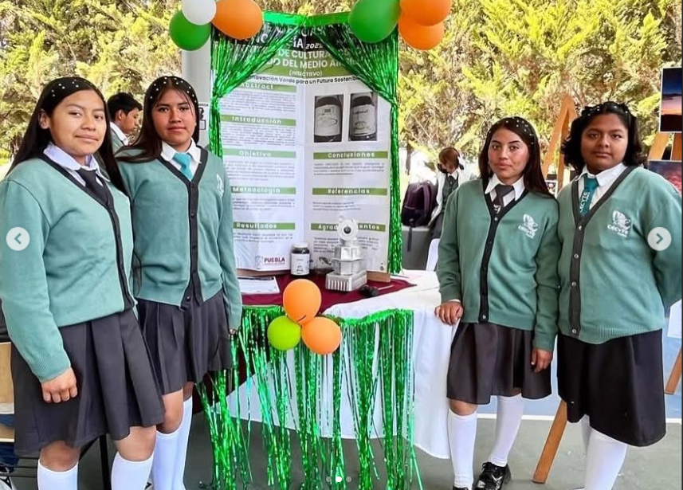
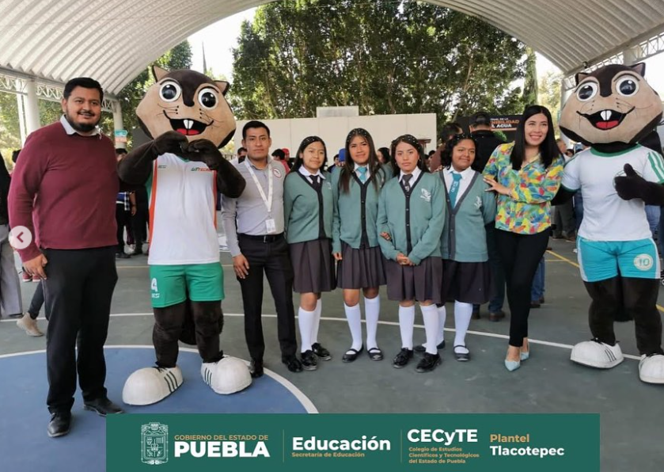

¿Que es el colegio CECYTE?

forma parte del Colegio de Estudios Científicos y Tecnológicos del Estado de Puebla.
Su modelo educativo surgió tras la creación de los CECyTES en 1991, como organismo público descentralizado .
El sistema CECyTE en Puebla abrió su primer plantel (Tehuitzingo) en 1996 y luego Chignahuapan, hasta contar con varias sedes .
Tlacotepec es una de las extensiones de CECyTE, con enfoque tecnológico y bachillerato general
cecyteo.edu.mx
+2
estilosdeaprendizaje.org
+2
emsad-42-ceyteo.neocities.org
+2
.
Su misión es ofrecer educación media superior de calidad, con formación técnica y general.
El enfoque promueve habilidades académicas, técnicas, sociales y humanas.
Los valores que impulsa son compromiso, innovación, creatividad, empatía e integridad .
Enfatiza la conexión con el sector productivo y la comunidad.
Su programa académico incluye bachillerato general, tecnológico y carreras técnicas.
Pueden incluir idiomas como inglés, francés o alemán, aunque la oferta exacta en Tlacotepec puede variar.
El plantel cuenta con instalaciones modernas: aulas, laboratorios, biblioteca y espacios deportivos.
Se promueve un entorno seguro con medidas de vigilancia y acceso controlado.
Ofrece actividades extracurriculares: deportes, arte, servicio comunitario y liderazgo.
Los estudiantes pueden participar en prácticas profesionales y proyectos de investigación.
Fomenta la formación integral para prepararse a retos del siglo XXI.
Recibe jóvenes con expectativas académicas y profesionales en la Sierra Negra de Puebla.
Su ubicación se encuentra en Tlacotepec de Benito Juárez, Puebla, en Sexta Barrio San Lucas
La zona es rural, con una comunidad mayoritariamente agrícola y productiva. El sistema CECyTE Puebla cuenta con 9 planteles y 8 centros EMSaD . EMSaD (media superior a distancia) ofrece opciones en zonas remotas. En Puebla, la matrícula podría ser comparable en plantel regular. Los docentes son seleccionados por sus conocimientos técnicos y compromiso docente. Se estimula el desarrollo profesional continuo del cuerpo académico. El plan educativo incluye formación dual en algunos formatos tecnológicos
¿Que ofrece cecyte?
Cecyte te ofrece crecer, es decir cuando entres al cecyte puedes escoger una de las carreras que la escuela te ofrece. El planel que esta ubicado en Tlacotepec de Benito Juarez Puebla se ofrece dos carreras las cuales son:
- PGEA: Procesos De Gestion Administrativa
- Inteligencia Artificial
En Tlacotepec, pueden ofrecer especialidades locales según demanda. Las extensiones buscan atender comunidades rurales sin transporte frecuente. EMSaD permite estudiar media superior desde casa combinando apoyos presenciales. El plantel favorece el desarrollo de proyectos comunitarios. Existen vínculos con empresas locales para prácticas y talleres. La biblioteca ofrece recursos impresos y digitales. Se promueve el acceso a internet y herramientas tecnológicas. El laboratorio de ciencias sirve para prácticas experimentales. Espacios deportivos habilitados para fútbol, voleibol y basquetbol. Instalaciones artísticas para música, danza y teatro. Exámenes y evaluaciones están alineados con estándares estatales. En Puebla, la Secretaría de Educación mantiene supervisión y apoyo. Las cuotas escolares suelen ser accesibles o subsidiadas. Se ofrecen descuentos por buen rendimiento académico. Almuerzos o servicios como cafetería funcionan dentro del plantel. La cafetería es administrada por personal local o asociación escolar. Cuenta con implicación activa de padres de familia en comités. El vínculo comunidad-plantel fortalece la relevancia social. Los eventos escolares incluyen ferias de ciencias y arte. Los estudiantes participan en concursos regionales y estatales. También hay enlaces con servicios de salud y campañas preventivas. En la Sierra Negra, se promueven la protección ambiental y cuidados de salud. A través de servicio social, se atienden necesidades de la comunidad. La escuela destaca por su compromiso con el entorno rural. Su enfoque valora las raíces culturales locales. Retos incluyen infraestructura limitada y acceso tecnológico. Sin embargo, hay esfuerzos para mejorar redes y conectividad. El plantel requiere apoyo continuo de autoridades municipales y estatales. La seguridad sigue siendo una prioridad colectiva. Se han implementado protocolos de prevención escolar. Los estudiantes cuentan con orientación vocacional. Se les apoya para el acceso a Universidad o empleo técnico. En años recientes, CECyTE ha adaptado currículos a nuevas demandas laborales. Incluye habilidades digitales y empresariales emergentes. El plantel favorece la equidad de género en carreras STEM. Se diseñan actividades para promover liderazgo juvenil. Talleres de emprendimiento generan oportunidades locales. Participación en redes estatales de colegios tecnológicos. Fortalece movilidad académica con otros planteles de Puebla. Intercambios pueden ocurrir entre ciudades y municipios. Estudiantes de idiomas amplían su perfil competitivo. En Inglés y otros, se preparan para certificaciones básicas. Los egresados cuentan con diploma de bachillerato técnico o general. Esto les abre puertas a universidades o empleos. Varios egresados destacan en áreas técnicas regionales. La escuela promueve la formación cívica y valores ciudadanos. Clubes escolares mejoran convivencia y trabajo en equipo. Torres ocasionales de ciencia permiten aplicar conocimientos. En comunidad, se celebran festividades escolares tradicionales. El plantel es espacio cultural y social en Tlacotepec. Padres colaboran en eventos como días culturales. La escuela genera empleo local para docentes y personal administrativo. Se ha consolidado como polo de desarrollo educativo local. El reto futuro: ampliar matrícula y diversificar especialidades. También fortalecer la infraestructura e internet. Mantener la seguridad y ambiente sano es clave. Se buscan más convenios con empresas y universidades. La meta es elevar la matrícula mediante mejor calidad percibida. Se desea integrar más a la comunidad y mantener valores. Ser semillero tecnológico en la Sierra Negra. Convertirse en modelo de éxito rural dentro del CECyTE Puebla. El apoyo gubernamental estatal y federal es esencial. Buscar financiamiento para edificación, laboratorios, deportes. Aspira a una participación más activa en competencias académicas. En unos años, puede ser ejemplo de educación técnica rural. El CECyTE Tlacotepec representa la unión educación comunidad futuro.
¿Que proyectos y eventos se llevan acabo?
En esta escuela se llevan acabo diferentes actividades de igual manera que proyectos ya que en esta escuela se busca estudiante
que quieran una carrera un futuro para ellos y para mexico. Veamos algunos proyectos y eventos que se realizan en la escuela.
✅ Faenas y proyectos comunitarios
Faena comunitaria en Tecamachalco Tlacotepec (marzo 2025): el personal y estudiantes participaron en labores de limpieza , deshierbe y mantenimiento de áreas públicas a lo largo de la carretera Tecamachalco Cañada Morelos (Agencia Cervecera). Esta faena fortaleció la identidad comunitaria y mejoró el entorno localUnos de los eventos que se llevan acabo son como la feria de ciencias en la siguiente imagen se muestra como los estudiantes participaron ganaron y se fueron a competir a otro plantel.  
Regresar